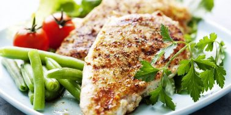
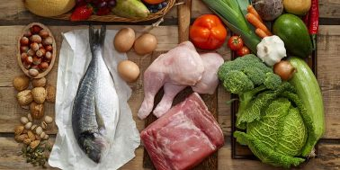
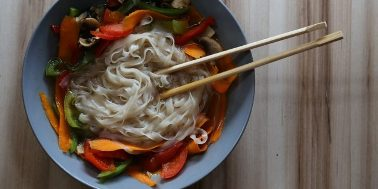
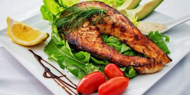
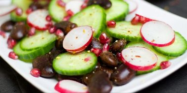

Схуднення: користь чи шкода ?
Замислюючись над схудненням, більшість людей задається цілком логічним питанням: яку користь це принесе і наскільки може бути шкідливим? У тваринному світі процес втрати ваги - це практично завжди погано, оскільки становить загрозу для життя живої істоти. Однак по відношенню до людини ситуація інша - велика кількість і доступність продуктів харчування призвели до того, що переважна більшість людей мають зайву вагу, а частина з них - ожиріння. Тому в цьому випадку процес схуднення може бути виправданий, оскільки призведе до зміцнення здоров'я і продовження життя.
То ж яку користь і шкоду може принести нам схуднення?
Користь схуднення
За правильного підходу і розуміння процесу ніяких порушень в роботі організму не спостерігається, а, навпаки, відбувається зміцнення здоров'я і зниження навантаження на органи і системи.- Зниження навантаження на суглоби - зайва вага надає додаткове навантаження на суглоби, особливо, якщо людина не займається спортом. Це створює умови для проблем з суглобами (артрити, артрози) в майбутньому. Тим часом, зниження ваги до комфортного для організму дозволяє відстрочити або взагалі уникнути цього.
- Зниження навантаження на внутрішні органи - утворення зайвої ваги свідчить про регулярне гіперкалорійне харчування. У реальному житті це проявляється у споживанні зайвої і / або некорисної їжі, що підвищує навантаження на органи і системи організму, що в майбутньому може призвести до серйозних патологій, діабету тощо Впорядкування харчування та зниження ваги до норми допомагають уникнути цього навантаження, попереджуючи розвиток безлічі захворювань.
- Покращення гормонального фону - наукові дослідження свідчать про залежність зайвої ваги і харчування від рівня статевих і анаболічних гормонів. Так, наприклад, чоловіки із зайвою вагою мають жіночі риси, оскільки синтез власного тестостерону знижується, а рівень жіночих гормонів (естрогенів) стає підвищеним.
- Покращення самопочуття і підвищення фізичної активності.
- Підвищення естетичної краси тіла та привабливості.
Шкода схуднення
Схуднення схудненню - різниця. В одному випадку воно може приносити користь, а в іншому - призводити до незворотних порушень здоров'я. Схуднення може бути шкідливим, якщо:- Занадто різке зниження ваги (жорсткі дієти) - чим жорсткіше дієта, тим сильніше навантаження на
організм і тим вище шанс зривів та повернення до колишньої ваги.
- Схуднення для спортивних цілей - насамперед це стосується культуристів, які не тільки різко зганяють вагу, але і сильно зневоднюють організм, а також навантажують органи і системи прийомом сильнодіючих фармацевтичних засобів.
- Жорстке обмеження або заборона певного нутрієнта - існує безліч дієт, що обмежують або забороняють споживання будь-якого нутрієнта - наприклад, вуглеводів і / або жирів. До таких належать білкові, безвуглеводневі, без жирові та інші дієти. Наприклад, заборона на споживання жирів призводить до порушень роботи ендокринної системи і зниження вироблення гормонів; споживання одних білків серйозно навантажує печінку та нирки, а також призводить до їх токсичного отруєння тощо.
- Використання фарм-препаратів та БАДів для схуднення - будь-яке використання лікарських засобів та біологічно активних добавок для схуднення може бути дуже небезпечним для здоров'я. Крім того, це не усуває причину зайвої ваги - неправильне харчування і надлишок калорій, а в більшості своїй взагалі не впливає на вагу. Однак всі вони можуть мати цілу низку протипоказань та побічних ефектів.
Правильні висновки
Таким чином, схуднення може бути шкідливим тільки в разі неправильної дієти, режиму, а також прийому лікарських і біологічно активних препаратів. Тобто, на перший план виходить те, як саме ви худнете. Від цього залежить не тільки шкідливість даного процесу, а й ефективність, а також довготривалість результату.
За грамотного підходу та вироблення правильних звичок схуднення буде ефективним і корисним для здоров'я. Основна користь буде полягати в поліпшенні стану організму, внутрішніх органів і систем, а також в самопочутті і психологічному задоволенні естетикою свого тіла і підвищенням привабливості.
Схуднути без дієт: ставимо на здорове харчування
Правильне харчування повинно бути не тільки помірним і регулярним, але і різноманітним.
Відмовитися від улюблених, але шкідливих продуктів дуже складно. Хоча для цього вам не потрібна допомога спеціаліста – можна легко вирахувати для себе правильний раціон, визначити калорійність і скористатися перевіреними порадами.
Правильне харчування повинно бути не тільки помірним і регулярним, але і різноманітним, тобто охоплювати всі ті продукти рослинного і тваринного походження, які містять незамінні сполуки (ті що не утворюються в тілі людини самостійно).
- Калорійність раціону повинна бути прив‘язана до енерговитрат, тобто покривати мінімум необхідного (основний обмін) та робочу надбавку (залежить від виду діяльності). З віком калорійність добового раціону повинна знижуватися в основному за рахунок тваринних жирів і вуглеводів (хліб, картопля, цукор).
- 5-разове харчування Нерегулярний прийом їжі призводить до порушення травлення. Найбільш раціональним є 5-разове харчування, приблизно в один і той же час.
- Їжте повільно Не дарма батьки в дитинстві жартували: "не поспішай, подавишся". Намагайтеся відволіктися від думок про роботу, про справи, не слід вести серйозних розмов, читати або дивитися телевізор.
- Відмовитися від їжі всухом'ятку. Рідкі страви, приготовані на м'ясних, рибних, овочевих і грибних відварах, сприяють виділенню шлункового соку. Першу страву можна супроводжувати основною з м'яса, риби, круп, картоплі та ін.
- Розвантажувальний день: 1 день в тиждень робіть розвантажувальним. Якщо це важко, то хоча б 1 або 2 дні в місяць. У розвантажувальні дні нормалізується робота травної системи.
- Основні правила здорового харчування:
-
Слід знати що їсти, коли і скільки:
- вуглеводи споживаємо у першій половині дня (до 16-00).
- обмежуємо прості вуглеводи!
- після 16-00, в основному, білки, а також овочі з низьким глікемічним індексом
- оптимальне співвідношення білків, жирів та вуглеводів 30/20/50%
- Їжте поживну і різноманітну їжу, переважно рослинного походження.
- Їжте складні вуглеводи (цільнозернові продукти, крупи) декілька разів на день.
- Їжте щонайменше 400г фруктів та овочів щодня. Найкраще - свіжих,сезонних, місцевих.
- Підтримуйте масу тіла у межах 18,5-25 ІМТ завдяки щоденній активності. ІМТ=вага,кг/(зріст,м)2
- Контролюйте вживання жирів. Жири повинні становити не більше 30% денного раціону. Замінюйте насичені жири ненасиченими.
- Замінюйте м'ясо і м'ясні продукти з високим вмістом жиру на бобові, рибу, м'ясо птиці.
- Вживайте молоко і молочні продукти з низьким вмістом жиру.
- Вибирайте продукти з низьким вмістом цукру. Обмежуйте вживання солодких напоїв і солодощів.
- Вживайте менше солі. Загальна кількість солі у день не повинна перевищувати однієї чайної ложки (5г).
- Норми вживання алкоголю не встановлено, але ідеальним для здоров'я є взагалі не вживати.
- Готуйте їжу безпечно. Запікайте, проварюйте, готуйте на пару для того, щоб зменшити вміст жирів.
- Після народження дитини підтримуйте виключно грудне вигодовування до 6 місяців, а у віці від 6 місяців до 2 років - поєднуйте з правильним додатковим харчуванням. Це зменшить ризики ожиріння і розвитку неінфекційних захворювань у майбутньому.
-
Слід знати що їсти, коли і скільки:
- Споживайте овочі з кожним прийомом їжі, вони:
- містять клітковину, яка очищає стінки кишківника
- сприяють насиченню меншою кількістю їжі, оскільки заповнюють шлунок
- містять мало калорій
- "Ні!" напівфабрикатам, вони:
- містять багато солі
- містять багато смакових та ароматичних добавок
- дуже калорійні
- Їжте повільно - ретельно пережовуючи, ми:
- допомагаємо процесу травлення
- насичуємось меншою кількістю їжі
- не переїдаємо
- Пийте більше води, вода:
- зберігає молодість
- знижує втому
- виводить токсини
- звичайно, сприяє схудненню
- + ще тисяча та одна причина
- Обов’язково снідайте (особливо це важливо для жінок), сніданок:
- допоможе знизити споживання калорій протягом дня
- прискорює метаболізм
- дарує нам енергію для продуктивного дня
- Займайтесь силовими тренуваннями –
- цим ви прискорите метаболізм та отримаєте ще багато приємних бонусів
- Нарощуйте м’язи -
- м’язи не тільки витрачають більше калорій, ніж жир, але й роблять наше тіло гарнішим.
- Їжте білок -
- це більше насичення за меншої калорійності і не тільки
- Використовуйте сантиметр, а не вагу –
- під час заняття силовими тренуваннями відбувається збільшення м’язової маси, а м’язи набагато менші жиру за об’ємом.
- Ходіть пішки:
- головна запорука схуднення – витрачати калорій більше, ніж отримувати, тому збільшуємо побутову активність.
- Їжте фрукти -
- фрукти містять вітаміни та клітковину, але також і цукор, тому споживайте фрукти до обіду, щоб встигнути витратити отримані калорії.
- "Ні!" газованій воді та сокам з тетрапакетів –
- вони містять багато цукру, складно контролювати надходження калорій.
- Яєчня з копченим лососем
- Сендвіч з тунцем
- Салат з шматочками курячого м'яса, приготованого на грилі
- Шоколадний бісквіт і шоколадний мус
- Стейк по-гаельськи - стейк з яловичини, маринованої в віскі.
- Макарони
- Картопля
- Біфштекс з кров'ю
- Курячі яйця
- Цибулю і часник
- Хліб з скоринкою
- Несезонні продукти
- Солодкий чай
- Головні болі.
- Запаморочення.
- Слабкість.
- Запори.
- Перша фаза найсуворіша, вона триває не менше двох тижнів і дозволяє втратити 3-4 кг. В цей час ви скорочуєте кількість вуглеводів до 20 г в день, причому 12-15 г з них отримуєте з овочів. Ви споживаєте багато білка з птиці, м'яса, риби і морепродуктів, яєць, сиру, при цьому. повністю виключаєте фрукти, солодку випічку, пасту, зернові, горіхи. Необхідно відмовитися від алкоголю і випивати вісім склянок води в день.
- Ви продовжуєте споживати 12-15 г вуглеводів з овочів і уникаєте цукру, але поступово повертаєте деякі багаті корисними речовинами продукти: горіхи, насіння, ягоди. Ви втрачаєте вагу і переходите до наступної фази, тільки коли до вашої мети залишиться близько 4,5 кг.
- Ви поступово вводите в меню раніше заборонену їжу: фрукти, крохмалисті овочі, цільнозернові продукти. Можна додати 10 г вуглеводів. Але якщо ви почнете знову набирати вагу, потрібно повернутися до норми в 20 м В цій фазі ви залишаєтеся, поки не досягнете своєї ідеальної ваги.
- Дозволені будь-які продукти, але ви продовжуєте дотримуватися принципів дієти. Якщо починаєте набирати вагу, повертаєтеся до попередньої фази.
- Недолік кальцію через відсутність молочних продуктів.
- Погіршення стану нирок через споживання великої кількості білка і насичених жирів.
- Підвищення ризику серцево-судинних захворювань через споживання великої кількості м'яса.
- Основу раціону складають фрукти і овочі, цільнозернові продукти, бобові, горіхи, сир і йогурт. Ці продукти можна їсти кожен день.
- Вершкове масло замінюється на оливкову і ріпакову.
- Червоне м'ясо, яйця і солодощі потрібно їсти якомога рідше, а можна зовсім виключити з раціону.
- Рибу і птицю потрібно їсти як мінімум два рази на тиждень.
- В день потрібно випивати шість склянок води. Іноді можна пити червоне вино.
- Потрібно додати трохи фізичних вправ.
Важливо! Не змінюйте різко Ваш раціон, відмовляйтесь від шкідливих продуктів та звичок поступово! Znaj.UA
12 порад для схуднення
Декілька порад, які допоможуть вам позбавитись від зайвих калорій без особливої шкоди для здоров'я. Єдине, що вимагається від вас - міняти культуру харчування, свій спосіб життя і ставлення до питань харчування.


Що їсть англійська королева
та від яких продуктів вона відмовилася?
Королівське ранок починається з традиційного англійського сніданку - чаші чорного чаю, каші і фруктів, вирощених у власному саду. В обід Єлизавета II їсть стейк зі шпинатом, рибу з овочами, курку з салатом. На аперитив їй подають джин або келих солодкого вина. На традиційне англійське чаювання «файв-о-клок» королеві подають канапе з огірком, лососем, шинкою, яйцями і горіхи.
Улюблені страви англійської королеви
Єлизавета II ніколи не їсть
5 дієт, ефективність яких підтверджена вченими
Лайфхакер вивчив кілька десятків серйозних наукових досліджень і зібрав дієти, які точно допоможуть вам схуднути. Вам потрібно лише вибрати той режим харчування, який не змусить вас страждати, і зробити його частиною свого життя.
1. Дієта Аткінса
Ця популярна низьковуглеводна дієта була розроблена в 1960 році кардіологом Робертом Аткінсом. Дієта включає кілька фаз і спрямована на зміну харчових звичок на більш здорові.
Що каже наука
У 2007 році в Стенфордському університеті дослідили ефективність чотирьох популярних дієт: Аткінса, Орніша, «Зони» і LEARN (низькожирова дієта). Через 12 місяців сидять на дієті Аткінса втратили 4,7 кг, на дієті LEARN - 2,6 кг, на дієті Орніша - 2,2 кг, а на дієті «Зона» - 1,6 кг.
В цілому багато досліджень підтверджують користь і ефективність дієт. Наприклад, недавній науковий огляд шести досліджень показав, що дієти з низьким глікемічним індексом або низької глікемічний навантаженням дозволяють спалити в середньому на кілограм більше, ніж інші, позитивно позначаються на масі тіла, кількості жиру і холестерину.
Можлива шкода
У статті на сайті клініки Майо попереджають, що дієта з різким скороченням кількості вуглеводів може мати такі побічні ефекти:
НЕ РЕКОМЕНДУЄТЬСЯ людям із захворюваннями нирок, жінкам у період вагітності та годування груддю, а також людям з високим фізичним навантаженням.
2. Палеодієта
У 2013 році палеодієта стала однією з найпопулярніших в світі, хоча серед дієтологів до сих пір немає єдиної думки, корисний цей режим харчування чи ні.
Що каже наука
У 2007 році вчені порівняли ефект палео-і середземноморської дієт без обмеження калорій.
Через 12 тижнів люди на палеодієті схудли в середньому на 5 кг (на середземноморської - на 3,8 кг) і втратили 5,6 см в талії (в іншій групі - 2,9 см). В середньому люди з палеогруппи споживали в день на 451 ккал менше, ніж у контрольній групі, причому без будь-яких обмежень. Крім того, у них нормалізувався рівень цукру в крові.
Користь для фігури підтвердилася і в дослідженні 2009 року. Протягом трьох місяців одна група дотримувалася палеодієти, інша - звичайної дієти для діабетиків. У підсумку перші скинули на 3 кг більше, ніж другі.
Також цікаво довгострокове дослідження 2014 року. Випробовуваних розділили на дві групи: протягом двох років одні дотримувалися палеодієти, інші - високоуглеводной дієти з низьким вмістом жирів. Група на палеодієті втратила більше жиру, особливо абдомінального, через 6, 12 і 18 місяців.
Палеодієта заснована на продуктах, якими харчувалися наші далекі предки ще до виникнення сільського господарства.
Прихильники дієти стверджують, що, незважаючи на тисячі років, що минули з того часу, організм людини досі найкраще справляється з їжею мисливців і збирачів.
Меню включає в себе м'ясо, рибу, яйця, овочі і фрукти, горіхи (крім арахісу) і насіння. В ідеалі м'ясо повинно бути від тварин, вирощених в природних умовах, без застосування спеціальних кормів. Також добре підходить дичина.
Дієта повністю виключає цукор, крохмалисті овочі, молочні продукти і зерно, масла (крім оливкової холодного віджиму, масел волоського горіха і авокадо), бобові, чай, кава, газовані і алкогольні напої, фруктові соки.
Можлива шкода
Дієтологи називають багато можливих небезпек палеодієти, серед яких:
ЩО ЦІКАВО: незважаючи на можливі негативні ефекти дієти, немає досліджень, які доводять її явну шкоду для здоров'я.
3. Веганська дієта
Термін «веган» з'явився в 1944 році завдяки групі вегетаріанців, які сформували Суспільство веганів. Вони вирішили перестати експлуатувати тварин в будь-якій формі і відмовитися не тільки від м'яса, але і від яєць і молочних продуктів.
Що каже наука
Рандом.дослідження 2013 року показало, що веганська дієта з низьким вмістом жиру дозволяє значно знизити вагу.
Після 18 тижнів дослідження ті, хто стали веганами позбулися в середньому від 4,3 кг, а люди з контрольної групи - від 0,1 кг. Також у перших знизився рівень холестерину і цукру в крові.
Схожі результати вчені отримали в 2005 році. Після 14 тижнів люди, які відмовилися від продуктів тваринного походження, скинули 5,8 кг, а люди, що замінили насичені жири вуглеводами (дієта NCEP), - 3,8 кг. Також вегани втратили більше сантиметрів в талії.
А ось в 2015 році вчені порівняли ефективність веганскої, вегетаріанської, пескетаріанської (можна рибу і морепродукти), семівегетаріанської (можна тільки червоне м'ясо) і невегетарианської дієт для зниження ваги. В результаті за шість місяців вегани втратили в середньому 7,5% від маси тіла - більше, ніж всі інші.
Веганська дієта не включає м'ясо і птицю, рибу і морепродукти, яйця, молочні продукти, а також страви, які можуть включати компоненти тваринного походження: желатин, казеїн, молочну кислоту.
Продукти рослинного походження споживаються без всяких обмежень. Вегани їдять бобові, сир тофу, горіхи, насіння, овочі і фрукти, п'ють кокосове і мигдальне молоко.
Можлива шкода
Головна небезпека веганської дієти - нестача вітаміну B12, необхідного для здоров'я людини і одержуваного з продуктів тваринного походження.
Дефіцит В12 може обернутися анемією, хронічною втомою, депресією. Крім того, дослідження 2015 року показало, що дефіцит цього вітаміну підвищує ризик серцево-судинних захворювань у вегетаріанців. Тому при дотриманні веганської дієти радять приймати добавки з В12.
Що стосується білка, його цілком можна отримувати з продуктів рослинного походження.
4. Середноземноморська дієта
з обмеженням калорій

На відміну від швидкісних дієт на кшталт грейпфрутової, середземноморська не може похвалитися швидкими результатами. Однак вона набагато більш ефективна в довгостроковій перспективі та допомагає підтримувати не тільки вагу, але й здоров'я. Крім того, дотримуватися цю дієту простіше та приємніше, що теж впливає на її ефективність.
Що каже наука
Більшість досліджень середземноморської дієти стосуються її користі для здоров'я серця. Наприклад, доктор Рамон Еструх привернув до свого п'ятирічного дослідження 7 447 чоловік і довів, що ризик інсульту і захворювань серця у людей на середземноморську дієту знижений на 28-30% в порівнянні з людьми на дієті з низьким вмістом жиру.
І хоча середземноморська дієта частіше використовується для профілактики серцево-судинних захворювань, вона ефективна і для втрати ваги, особливо в довгостроковій перспективі. Це підтверджують численні дослідження.
Основні принципи
Метааналіз рандомізованих контрольованих випробувань показав, що середземноморська дієта може стати корисним інструментом для зниження ваги, особливо якщо урізати калорійність раціону.
5. Дієта Орніша
Це дієта з низьким вмістом жиру, придумана Діном Орніш, професором медицини з Каліфорнійського університету. Вона спрямована на поліпшення здоров'я серця, позбавлення від зайвої ваги, зниження холестерину і кров'яного тиску.
Що каже наука
Дослідження Орніша показало, що люди, які дотримуються його дієти, за рік схудли на 10 кг, а через п'ять років підтримували вагу, що на 5 кг відрізняється від початкової.
У дослідженні Стенфордського університету люди, що сиділи на дієті Орніша, за рік схудли в середньому на 2,2 кг. Однак доктор Майкл Дансінгер в 2005 році отримав інші результати. За рік випробовувані на дієті Орніша втратили 3,3-7,3 кг, а на дієті Аткінса 2,1-4,8 кг.
Головне правило дієти Орніша - жир повинен становити не більше 10% від загальної норми калорій. При цьому радять виключити м'ясо і рибу, олію та маргарин, маслини, авокадо, насіння, горіхи, жирні молочні продукти, солодке, алкоголь.
У раціоні можуть бути присутніми знежирені молочні продукти, яєчні білки, нежирні крекери. Без обмежень можна споживати бобові, фрукти, зернові, овочі.
Крім дієти, Орніш радить виконувати фізичні вправи (як мінімум по 30 хвилин п'ять днів на тиждень або по 60 хвилин три дні на тиждень), справлятися зі стресом за допомогою йоги і медитації і проводити час з коханими людьми.
Можлива шкода
Як і у випадку з веганською дієтою, люди на дієті Орніша можуть страждати від нестачі білка і вітаміну B12. Тому варто приймати цей вітамін в добавках і частіше включати в раціон бобові, багаті рослинним білком.
Що це означає ?
Як бачите, всі дієти дуже різні. Дієта Аткінса обмежує вуглеводи, Орніша - жири. Палеодієта робить акцент на м'ясі, а веганська м'ясо повністю виключає. Притому наукові дослідження підтверджують користь і ефективність всіх цих дієт. І це просто чудово!
Вибирайте дієту, яка не змусить вас відмовлятися від улюблених продуктів. Не можете жити без м'яса - вибирайте палео або дієту Аткінса. Обожнюєте пасту - станьте веганом або дотримуйтеся середземноморського режиму харчування. Якщо легко обходитесь без жирної їжі, дієта Орніша допоможе вам скинути вагу.